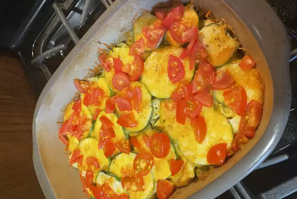

Casserole

This isn't your Grandma's tuna casserole, but it is sure to please everybody in the family.
- egg noodles
- tuna
- celery
- onions
- sour cream
- zucchini
- tomato
- Preheat oven to 350 degrees F (175 degrees C).
- Grease a 2 quart casserole dish.
- Bring a large pot of salted water to a boil, add noodles, and cook until al dente; drain.
- In a large mixing bowl, combine noodles, tuna, celery, and green onion
- Stir in sour cream, mustard, and mayonnaise.
- Season with salt and thyme.
- Spoon 1/2 of the noodle mixture into the prepared casserole dish.
- Arrange a layer of zucchini over the mixture. Top with the remaining noodles, followed by a layer of zucchini. Top the entire casserole with cheese.
- Bake in preheated oven for 30 minutes, or until hot and bubbly. Sprinkle the casserole with tomatoes before serving.
Home page